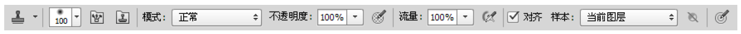
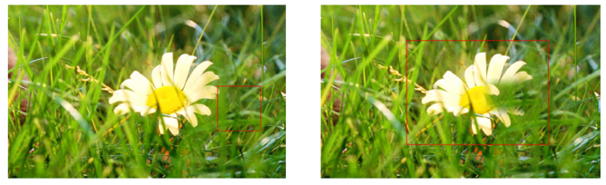
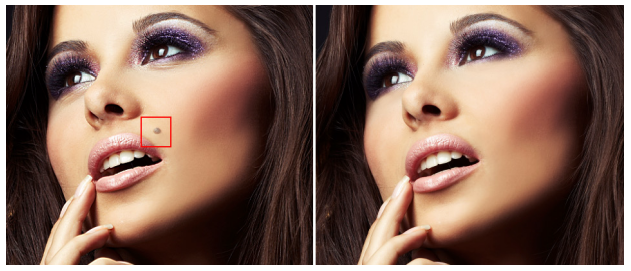
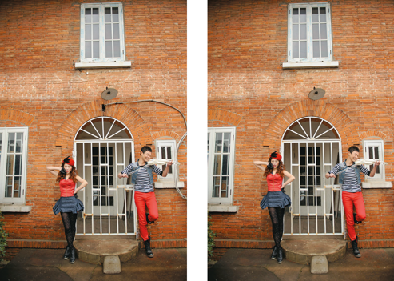
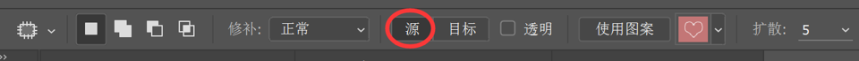
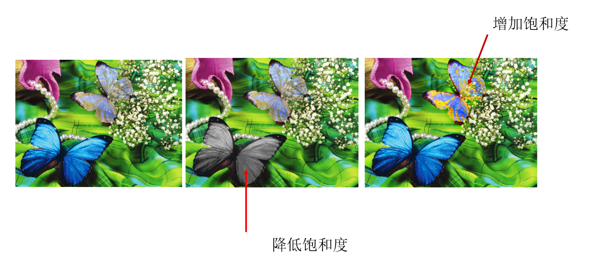

修复工具与图像润色工具
图章工具组
仿制图章工具
“仿制图章工具”可以将图像的一部分绘制到同一图像的另一个位置上。 “仿制图章工具”对于复制对象或修复图像中的缺陷非常有用。单击该工具，在仿制的样本区域按住 Alt 键并单击，进行取样。然后到需要绘制的区域按住鼠标左键并拖动，刚刚取样区域的像素会被绘制到当前位置。

单击“仿制图章工具”按钮，设置合适的笔尖，然后在取样的位置按住 Alt 键单击进行拾取。然后在需要修补的位置按住鼠标左键拓展进行覆盖。

仿制图章练习
图案图章工具
“图案图章工具”可以使用预设图案或载入的图案进行绘画，首先在选项栏中选择一种合适的图案，并设置混合模式以及画笔的不透明度，接着在画面中按住鼠标左键并拖动即可绘制出图案。 可通过自定义图案来达到“盖章”的目的。

修复工具组
污点修复画笔工具
使用“污点修复画笔工具”可以消除图像中的污点和某个对象。“污点修复画笔工具”不需要设置取样点，它可以通过在瑕疵处单击，并自动从所修饰区域的周围进行取样来修复单击的区域.

污点修复工具练习
修复画笔工具
与“仿制图章工具”的使用方法相同，“修复画笔工具”可以修复图像的瑕疵，也可以用图像中的像素作为样本进行绘制。不同的是，“修复画笔工具”还可将样本像素的纹理、光照、透明度和阴影与所修复的像素进行匹配，从而使修复后的像素不留痕迹地融入图像的其他部分。
修复画笔工具在进行仿制定义源的同时，涂抹的区域与当前光标经过的位置进行颜色计算，实现颜色的自然过渡。对于图像中多余的内容可以实现神奇的“消失”。

修复画笔工具练习
修补工具
修补工具可以使用其他区域或图案中的像素来修复选中的区域。修补工具会将选区内像素的纹理、光照和阴影等内容与源像素进行匹配，计算出最佳的修复效果。

修补工具练习
内容感知移动工具
内容感知移动工具是CS6版本中新增加的智能工具，根据设置的属性是扩展（复制）或移动，实现选择内容的复制或是移动操作，由系统自动对选区的边缘进行计算，轻松实现“乾坤大挪移”。
使用“内容感知移动工具”可以在无需复杂图层或慢速精确的选择选区的情况下快速地重构图像。首先单击工具箱中的“内容感知移动工具”，在图像上绘制区域，并将影像任意地移动到指定的区块中，这时 Photoshop 就会自动将影像与四周的景物融合在一起，而原始的区域则会进行智能填充。
红眼工具
在光线较暗的环境中照相时，由于主体的虹膜张开得很宽，经常会出现“红眼”现象。“红眼工具”可以通过在瞳孔处单击，快速去除由闪光灯导致的红色反光。
历史记录工具组
历史记录画笔工具
“历史记录画笔工具”可以理性、真实地还原某一区域的某一步操作，可以将标记的历史记录状态或快照用作源数据对图像进行修改。“历史记录画笔工具”需要与“历史记录面板”共同使用，首先需要在“历史记录面板”中标记一个操作步骤，然后使用“历史记录画笔”在画面中绘制，被绘制的区域会呈现出标记步骤的状态。
历史画笔工具练习
历史记录艺术画笔工具
与“历史记录画笔工具”相似，“历史记录艺术画笔工具”也可以将标记的历史记录状态或快照用作源数据对图像进行修改。不同的是，“历史记录艺术画笔工具”在使用原始数据的同时，还可以为图像创建不同的颜色和艺术风格。
模糊锐化工具组
模糊工具
“模糊工具”可柔化硬边缘或减少图像中的细节。使用该工具在某个区域上方绘制的次数越多，该区域就越模 糊。
锐化工具
“锐化工具”与“模糊工具”相反，可以增强图像中相邻像素之间的对比，以提高图像的清晰度。
涂抹工具
“涂抹工具”可以模拟手指划过湿油漆时所产生的效果。该工具可以拾取鼠标单击处的颜色，并沿着拖拽的方向展开这种颜色。
减淡加深工具组
减淡工具
“减淡工具”可以对图像亮部、中间调和暗部分别进行减淡处理，在某个区域上方绘制的次数越多，该区域就会变得越亮。
减淡工具练习
加深工具
“加深工具”可以对图像进行加深处理，在某个区域上方绘制的次数越多，该区域就会变得越暗。
加深工具练习
海绵工具
“海绵工具”可以增加或降低图像中某个区域的饱和度。如果是灰度图像，该工具将通过灰阶远离或靠近中间灰色来增加或降低对比度。
